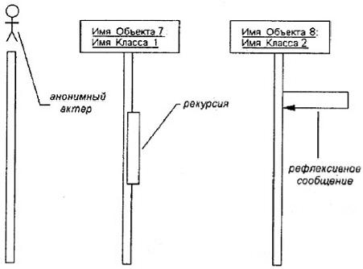

Практична робота з теми розробка діаграми послідовності
Мета роботи - тримати навички побудови динамічного представлення логічної моделі проектованої інформаційної системи у вигляді діаграм послідовності і кооперації UML.
Порядок виконання роботи
Для моделювання взаємодії об'єктів в мові иМЬ використовуються відповідні діаграми взаємодії. Говорячи про ці діаграми, мають на увазі два аспекти взаємодії. По-перше, взаємодії об'єктів можна розглядати в часі, і тоді для представлення тимчасових особливостей передачі і прийому повідомлень між об'єктами використовується діаграма послідовності. Часовий аспект поведінки може мати істотне значення при моделюванні синхронних процесів, що описують взаємодії об'єктів. Саме для цієї мети в мові иМЬ використовуються діаграми послідовності.
По-друге, можна розглядати структурні особливості взаємодії об'єктів. Для представлення структурних особливостей передачі і прийому повідомлень між об'єктами використовується діаграма кооперації.
На діаграмі послідовності зображаються виключно ті об'єкти, які безпосередньо беруть участь у взаємодії і не показуються можливі статичні асоціації з іншими об'єктами. Для діаграми послідовності ключовим моментом є саме динаміка взаємодії об'єктів в часі.

Рис.14 - Графічне зображення актора, рекурсії та рефлексивного повідомлення на діаграмі послідовності
Крайнім ліворуч на діаграмі зображається об'єкт, який є ініціатором взаємодії(об'єкт 1 на рис. 6.1). Правіше зображається інший об'єкт, який безпосередньо взаємодіє з першим. Таким чином, усі об'єкти на діаграмі послідовності утворюють деякий порядок, визначуваний мірою активності цих об'єктів при взаємодії один з одним.
Кожна взаємодія описується сукупністю повідомлень, якими об'єкти, що беруть участь в нім, обмінюються між собою. У цьому сенсі повідомлення (message) є закінченим фрагментом інформації, який вирушає одним об'єктом іншому. При цьому прийом повідомлення ініціює виконання певних дій, спрямованих на рішення окремої задачі тим об'єктом, якому це повідомлення відправлене.
Таким чином, повідомлення не лише передають деяку інформацію, але і вимагають або припускають від приймаючого об'єкту виконання очікуваних дій. Повідомлення можуть ініціювати виконання операцій об'єктом відповідного класу, а параметри цих операцій передаються разом з повідомленням. На діаграмі послідовності усі повідомлення впорядковані за часом свого виникнення в модельованій системі.
У мові UML можуть зустрічатися декілька різновидів повідомлень, кожне з яких має своє графічне зображення (рис. 14):
- перший різновид повідомлення (рис. 14) є найбільш поширеним і використовується для виклику процедур, виконання операцій або позначення окремих вкладених потоків управління;
- другий різновид повідомлення (рис. 14) використовується для позначення простого(не вкладеного) потоку управління;
- третій різновид (рис. 14) явно означає асинхронне повідомлення між двома об'єктами в деякій процедурній послідовності. прикладом такого повідомлення може служити переривання операції при виникненні виняткової ситуації;
- нарешті, останній різновид повідомлення (рис. 14) використовується для повернення з виклику процедури. прикладом може служити просте повідомлення про завершення деяких обчислень без надання результату розрахунків об'єкту-клієнтові.
Повідомлення можуть мати власне позначення операції, виклик якої вони ініціюють у приймаючого об'єкту. В цьому випадку поряд із стрілкою записується ім'я операції з круглими дужками, в яких можуть вказуватися параметри або аргументи відповідної операції. Якщо параметри відсутні, то дужки все одно мають бути присутніми після імені операції.
Порядок виконання роботи
Завдання для виконання роботи беруться з пункту 2.4 Завдання для груп студентів. У проектах 1 - 13 кожній групі студентів необхідно розробити UML діаграми послідовності для кожного преценденту та історії користувача згідно до інформації, що наведена у пункті 4.2 Теоретичні відомості.